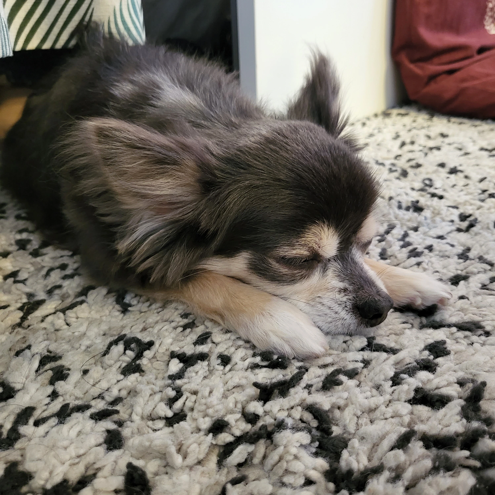
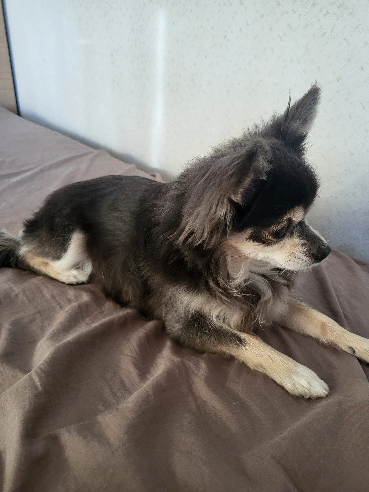
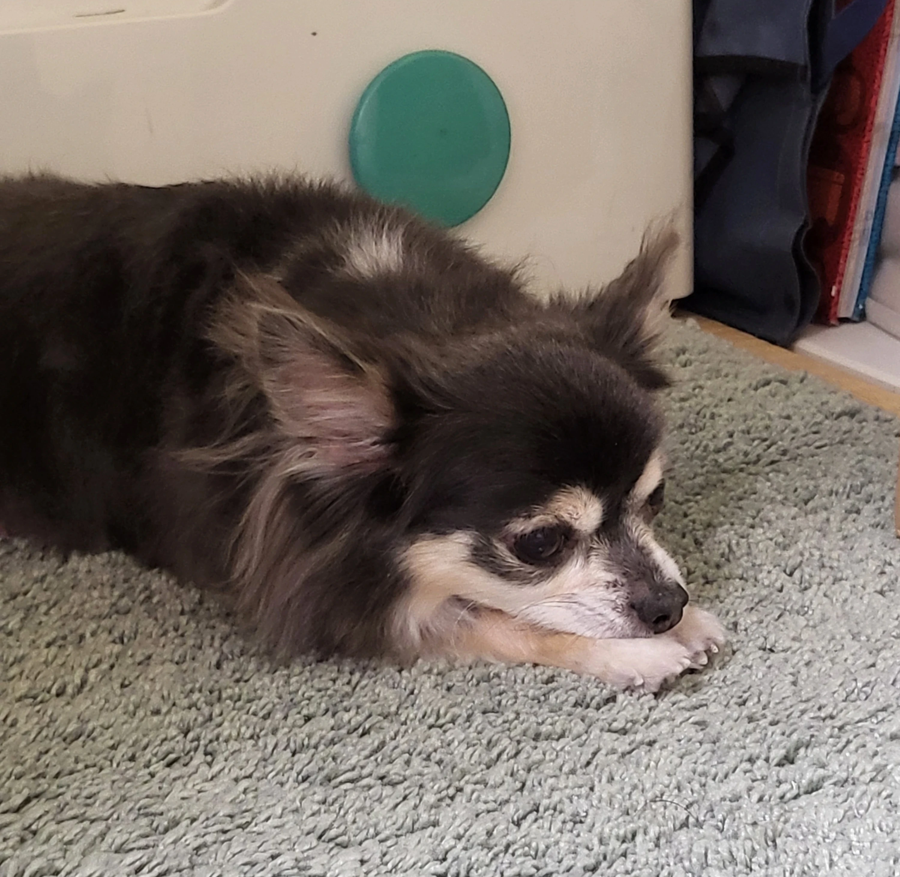
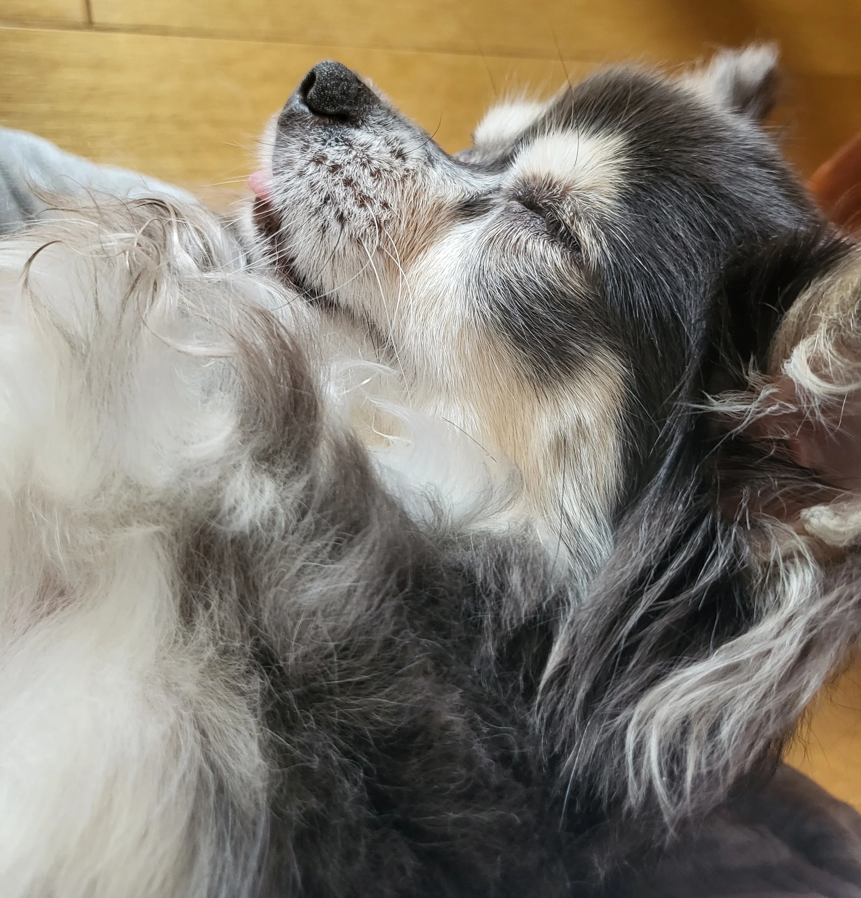
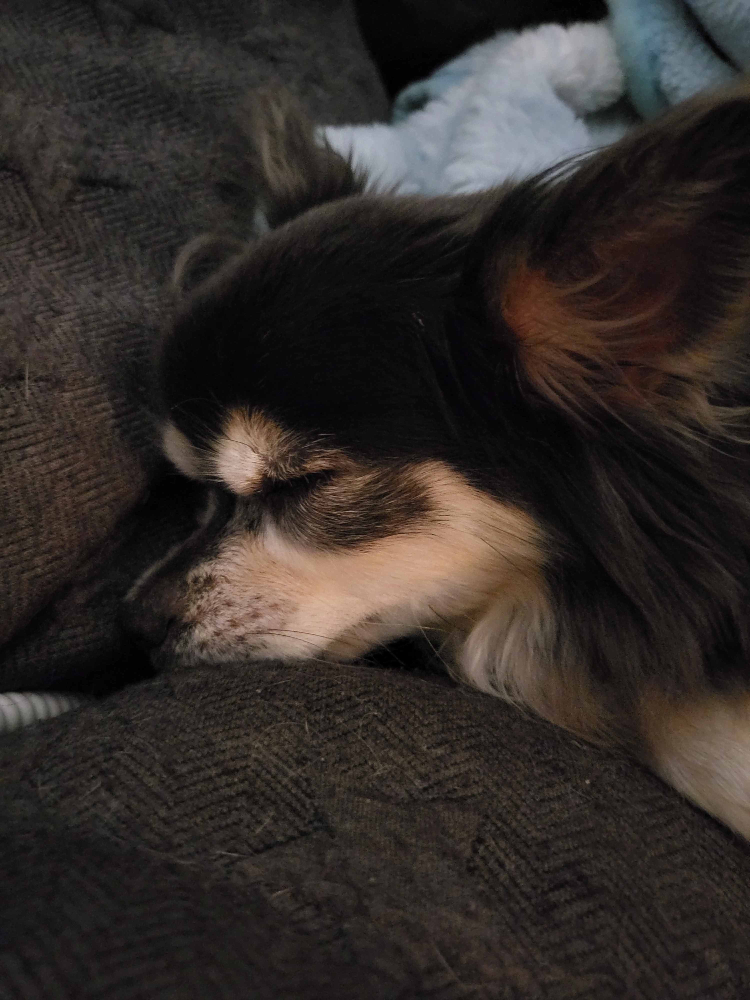
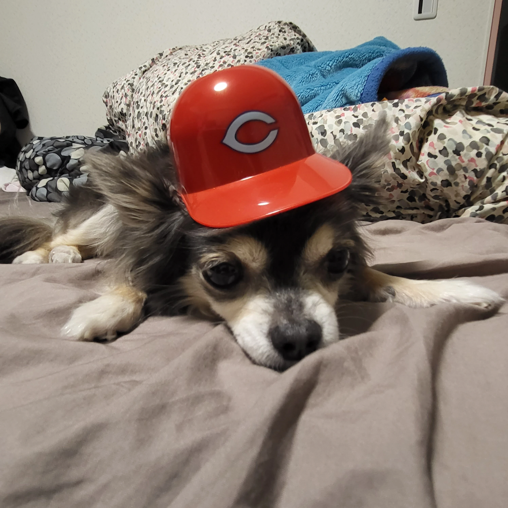

本サイトは移転しました。5秒後にジャンプします。
ジャンプしない場合は、以下のURLをクリックしてください。
投稿日:2022/9/19
かわいい！
僕の家では、チワワを飼っています。ベリーといいます。
とてもかわいいので紹介します
|  | 寝ています。お気に入りの場所です。 |
|  | 横からみたかんじ。 |
|  | 遠くから様子を伺っています。遠くからめっちゃズームして撮りました。 |
|  | 抱っこすると寝たりします。 |
|  | ( ˘ω˘ )ｽﾔｧ… |
|  | カープの帽子をかぶせてみた。 |
チワワはかわいい！チワワしか勝たん！！
ブルータンの絶妙な毛色の組み合わせ、もふもふしてて可愛すぎる！！